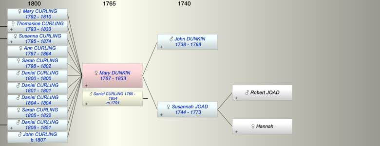

| [Index] |
| Mary Matson DUNKIN (1767 - 1833) |
|  |
| b. 04 Feb 1767 at St Laurence |
| m. 17 Mar 1791 Daniel CURLING (1765 - 1854) at St Laurence |
| d. 1833 aged 66 |
| Parents: |
| John DUNKIN (1738 - 1788) |
| Susannah JOAD (1744 - 1773) |
| Events in Mary Matson DUNKIN (1767 - 1833)'s life | |||||
| Date | Age | Event | Place | Notes | Src |
| 04 Feb 1767 | Mary Matson DUNKIN was born | St Laurence | Note 1 | ||
| Sep 1773 | 6 | Death of mother Susannah JOAD (aged 29) | St Laurence | aged 29 ex St Laurence MIs | |
| Dec 1788 | 21 | Death of father John DUNKIN (aged 50) | St Laurence | Note 2 | |
| 17 Mar 1791 | 24 | Married Daniel CURLING (aged 26) | St Laurence | Note 3 | |
| 1792 | 25 | Birth of daughter Mary CURLING | St Laurence | Note 4 | |
| 1793 | 26 | Birth of daughter Thomasine CURLING | St Laurence | Note 5 | |
| 26 Jul 1795 | 28 | Birth of daughter Susanna CURLING | St Laurence | Note 6 | |
| 1797 | 30 | Birth of daughter Ann CURLING | St Laurence | Note 7 | |
| 08 Nov 1798 | 31 | Birth of daughter Sarah Hope CURLING | St Laurence | Note 8 | |
| 1800 | 33 | Birth of son Daniel CURLING | St Laurence | Note 9 | |
| 1800 | 33 | Death of son Daniel CURLING | St Laurence | buried 21 Aug 1800 ex FS | |
| 1801 | 34 | Birth of son Daniel CURLING | St Laurence | Note 10 | |
| 1801 | 34 | Death of son Daniel CURLING | St Laurence | buried 13 Oct 1801 ex FS | |
| 1802 | 35 | Death of daughter Sarah Hope CURLING (aged 4) | St Laurence | Note 11 | |
| 1804 | 37 | Birth of son Daniel CURLING | St Laurence | Note 12 | |
| 1804 | 37 | Death of son Daniel CURLING | St Laurence | buried 22 Oct 1804 ex FS | |
| 13 Jul 1805 | 38 | Birth of daughter Sarah Hope CURLING | St Laurence | Note 13 | |
| 23 Aug 1806 | 39 | Birth of son Daniel CURLING | St Laurence | Note 14 | |
| 1807 | 40 | Birth of son John Dunkin CURLING | St Laurence | Note 15 | |
| 1810 | 43 | Death of daughter Mary CURLING (aged 18) | St Laurence | Note 16 | |
| 1832 | 65 | Death of daughter Sarah Hope CURLING (aged 27) | St Lawrence | Note 17 | |
| 1833 | 66 | Mary Matson DUNKIN died | |||
| 1833 | 66 | Death of daughter Thomasine CURLING (aged 40) | |||
| Created on a Mac™ using iFamily for Mac™ on 8 Oct 2023 |